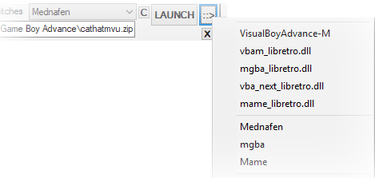
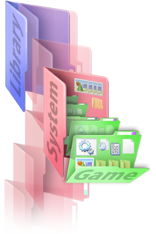

for Windows
Installer
(no metadata files)
size:
SHA1 :
This is the bleeding-edge development version of skeletonKey.
Extract the executable from the archive into a skeletonKey directory and run it to update.
Database files containting metadata. Extract this archive into your installation folder. (these packs will be downloaded dynamically if not found locally.)
WEBSITE: [WEBURL]/index.html
Source code: Github Page
Testimonials:
"what even is this for?"
-Anonymous on 4chan vg/emugen
"Just tell him it's nice"
-Neglected Man-child

Features
- A comprehensive, easy to use & compact GUI
- Drag & Drop ROMs to launch & create playlists.
- Leverages internet ROM repositories for Netplay automation
- Global and granular control over libraires of ROMs.
- Deploy a gaming environment to a portable device such as a flash-drive.
- Mirror your saves and save-states into a cloud (Dropbox/GDrive/OneDrive)
- Convert ROMs to a Windows executable
- Download, install & setup HTPC frontends, emulators and joystick mapping programs.
To Do:
- MAME softlist support.
- Enhance MAME joystick support for more systems.
- Cloud-state/mem-saving.
- Gamepad-driven disk-menus.
- Aria2 support
- Scraped Metadata Propagation
Usage
:=: Video Tutorials :=:
Setup Tutorial
Launching ROMs
Creating ROM-Jackets
Deploying an HTPC Gaming Frontend
SkeletonKey functions both as a ROM launcher and as a backend configuration tool for HTPC frontends.
ROMs can be launched quickly in many ways:
- Drag & drop a ROM file to the desktop icon,
- Drag & drop a ROM into the main tab
- Via the skeletonkey GUI to browse filtered ROMs categorically with search functions and quick-sets.
- Streamed from a ROM repository
- From the command line
As a configuration tool, skeletonKey can deploy a ROM-library that meets the expectations of users who desire a means to maintain the integrity of settings and assets indipendently of a frontend or emulator.
Nearly every skeletonKey option has a mouse-over tool-tip . Operational feedback appears in the statusbar at the bottom of the window.
Basic Overview
After skeletonKey is installed, a "systems ROOT" is defined and emulators are detected.
Identified systems found in the "systems ROOT" are automatically assigned to detected emulators.
Command-Line
An emulator-preset can be specified to override any assocation from the command-line.
SkeletonKey accepts the option -run= followed by the nickname of the emulator preset followed by the path to the rom. Any options specified by the preset are respected.
SkeletonKey launched from the command line without this option functions identically to drag'n drop.
...nkey> skeletonKey.exe -run=NickName "C:\Library\Console Name\Rom Name\rom file.rom"
**Nicknames must not contain spaces**
-clearrj will reset the ROM-Jacket system-setup preferences and queue-clearcfg will reset the per-game settings for all skeletonkey launcher presets :: (not ROM-Jackets)-clearset will reset the skeletonkey program settings-clearra will reset global retroarch settings-clearexe will reset emulator executable settings-clearscrape will delete scraped art and assetsadding a
!q to the end of your clear command will override and assume yes on all deletion queries.eg
-clearra!qThe Skey-Deploy utility accepts the following:
-reset command to reset the while keeping credentials for github.-gituser=USERNAME your git username (must be the first argument).-gitpass=PASSWORD your git password (must be the 2nd argument).-gittoken=TOKEN-STRING your git authentication token (must be the 3rd argument).Settings
Program Settings
The settings tab is for the location for your systems, emulators, playlists and other environment-options.
Auto-Load Per-Game Settings
SkeletonKey will automatically load any per-game settings previously created and create settings for the currently selected title upon launch if none are detected.
Systems Directory
By default, ROMs are [categorically] stored by system-name in the ..[Systems ROOT]\[SYSTEM NAME] folder.
Repository ROMs will be downloaded to the corresponding system-name which follows the no-intro naming nomenclature.
Emulators Directory
By default, all emulators will be installed to the Emulator Directory. Upon assigning a directory to the Emulators Directory, skeletonKey will search subdirectories for previously installed known emulators not currently identified or manually assigned.
Main
Options are categorized by type. The Launch tab is responsive and will populate options for the currently selected supported emulator. Any previous settings for the currently selected ROM are loaded.
Global-Launch-Menu
The Launch menu items persist across emulator settings populated in the Main tab. These items are at the top of the window and are necessary to browse directories, navigate playlists and launch a ROM.

The Global-Launch-Menu includes:
- the System List dropdown for directories & toggle for playlists
- the ROM selector button
- the EMU dropdown menu
- the"swtiches" toggle
- the editable selection menu containing items in the currently selected playlist or directory
- the "C" configure button
- A split
LAUNCH ::>button
System List
The folder/playlist toggle will toggle this dropdown between playlist files and the current system libraries. System Lists contain any folders found in the Systems ROOT directory and any systems which have been appended by the user .This can be filtered to display only detected and created systems.
Changing the system will automatically populate the ROM List with detected ROMs, load the emulator/core-associated preferences and then populate the tab with options if available.
Right-Click on this dropdown to configure it.
The switches toggle will expose options & arguments fields for emulators. These are pre-packed with many options and arguments, however spaces should be observed when plugging in your own switches.
LAUNCH
The ROM currently in ROM-List will be launched by the emulator/core in the EMU-List.
::>
A quick-launch selection set of all assigned presets and known compatible presets will appear in a dropdown menu
This menu can also be accessed via right-clicking on the LAUNCH button.
ROM List
The editable dropdown menu contains a list of all ROMs in the current system/playlist dropdown menu.
If the auto-load setting is enabled, whenever a new ROM is selected, the configuration files for that ROM will have values populate the tab.
A new configuration will be generated in the ROMs' configuration folder if one is not found.
(eg:\...\skeletonkey\cfg\Microsoft - DOS\msds_dosbox\TMNT\dosbox.conf).
If .
EMU List
The EMU list is a core/emulator dropdown which contains a list of all cores, all nicknames for system-associations, and all emuators.
Changing the core/emulator dropdown will dynamically populate the Main tab with options for the emulator/core (if supported) and any load existing settings the title may have.
Right-Clicking on this menu enables assignment and configuration.
RetroArch, MAME, Snes9x & Mednafen are currently supported.
[X] Clear button
Clears all current launch options. Right-click on this to delete ROM settings for the emultor in the EMU List.
Emulator Configuration Options
These options are dynamically loaded for each emulator. Settings changed by the user at run-time should load and populate the GUI after lauching.
Drag & Drop
Drag & Drop a ROM into the Main tab and with the Auto-Launch option enabled, skeletonKey will detect the ROM and launch it using the system's associated core/emulator, or bring forth the core/emulator dropdown if undetected or Auto-Launch is disabled.
Search & Find
The "find" button can be found in the lower right hand corner of the tab and will expand the search fields.
skeletonKey can search for ROMs in your "Systems" directories or playlists.
Selecting a title will repopulate the System-List & make it active in the ROM list.
A right-click menu allows for a single ROM to be launched by any installed emulator or it's directory opened by windows explorer. Additionally, multiple files can be selected and added to the current playlist.
Emu :=: Sys
RetroArch, Systems, Emulators, Frontends & Utilities
SkeletonKey can be used to quickly install emulators, frontends, retroArch and utilities. The Install Tab is also used to associate skeletonKey's systems with emulators and retroArch cores when using skeletonKey as a launcher.
Installing RetroArch & cores
RetroArch and components can be installed separately or as a single package (stable). The "RetroArch" list item includes all components needed by retroArch. The most recent nightly build as well as the stable version are available. A core-upate button will check for cores with updates to upgrade en-masse.
RetroArch is tightly integrated into skeletonKey with an exhaustive set of options and exclusive features for netplay. By default the most compatible core is selected as the skeletonkey's primary association for most of retroarch's supported systems. The GUI interface for retroArch is dynamic, responding after any changes made during gameplay.
RetroArch's "core_assets_directory" should be assigned to the [Systems ROOT] folder.
The playlist_directory and content_history_path (history file) should also be shared with skeletonKey.
Installing BIOS Files
Drag & Drop BIOS files or a BIOS pack (.7z .zip .rar) to automatically install them to their proper places in supported emulators directories.
Emulators
SkeletonKey can install hundreds of emulators. Supported emulators can be configured indipendently (for per-game settings too!!!) as they are launched by skeletonKey and as emulators assigned to ROM-Jackets. Each emulator can be assigned via drag and drop.
Systems / ROM Directories
Selecting "Systems" from the dropdown menu will allow users to define directories containing ROMs for over 100 systems. Each system may contain ROM multiple directories. Drag and drop is supported for multiple selected systems and folders.
Emulator & System Associations
The Associations section of the Install tab can be used to change the association of a system to a core, an emulator or nickname.
Skeletonkey can detect and assign emulators or a designated retroArch core to a system/s, however it may be desireable to create and configure systems and associations manually. A unique system-identifier or "nickname" can be created to create custom systems and associated emulator-presets.
Associating an emulator to a system creates a unique set of preferences for the emulator and assigns this set a nickname which can also be assigned to other systems. Right clicking on the System List or emu/core dropdowns will bring up menus to quickly configure or associate systems with emulators and cores.
The default association defines how skeletonKey will automatically launch ROMs categorically, however multiple nicknames/emulators can be assigned to a system to populate quick-launch/right-click.
In addition to these assigned emulators, an emulator can be assigned to a recognized extension for each system.
Assigning an extension to an emualator will override the default association for ROMs of the selected system, however emulators assigned to extensions need not populate in the assigned-emulators list.
VIDEO: }>
Systems are defined in part by file-extensions exclusive to the system. (eg: nestopia.exe [and retroarch's nestopia_libretro.dll core] by default are to assigned to the NES) & (eg: ONLY the Nintendo Entertainment System uses the .nes file-extension)
Because an emulator may have multiple system-assocations, a unique "system identifier" nickname can be created to define exclusive paramaters.
VIDEO: }>
-options & "/arguments.[ext]"
Options, arguments, quotes, ROM-paths and the extension can be adjusted to suit an emulator's needs.
Spaces are observed for options, arguments and command-lines.
The charachter must be escaped or it will be converted to a space.
[CUSTMOPT] & [CUSTMARG] are special tags assigned to MAME and other emulators which allow the passing of overriding options and arguments at runtime via the "switches" checkbox in the Global-Launch-Menu or Repository-Systems-Menu.
!!!!Enabling the "switches" override will deactivate preset options such as auto-system and ROM-type detection!!!!
Many MAME systems and several supported emulators options and arguments are available as presets for custom options & arguments.
Per-Game Configurations:
SkeletonKey can retain emulator settings for each game (configuration files, save-states, battery-saves/nvram) under supported emulators. Any changes that are made during gameplay will be saved.
Operational Details:
SkeletonKey copies and moves these configuration files back and forth between the emulator's folder and the per-game configuration folder before and after the emulator runs.
Configuration files are stored inside a folder of the ROM's name. A folder for each system can be located in the skeletonKey installation folder under the "cfg" directory. EG:
\...\skeletonKey\cfg\System - Name\emulator\ROM Title\config.ini
For retroArch, per-game settings are stored in
retroarch-folder\config\core name\ROM Title.cfg
ROMs dropped to the desktop icon which are not identified as belonging exclusively to a core/emulator will bring up a menu allowing users to quickly select a core/emulaor preset.
Drivers
Visual C++
Many emulators require these runtimes
DirectX
Required by many emulators.XBox360 Drivers
This installs the XBox 360 Joystick drivers from Microsoft. These are needed for Windows Vista and 7.
SCP Wrapper for Dualshock Joysticks
The SCP Wrapper is a driver for bluetooth Sony Dualshock joysticks.
This is the most reliable and easiest way for DS3/4 users to use their joysticks in Windows 7/8x-10.
DS4Windows
DS4Windows is a Sony DualShock 4 driver for windows. It is installed however the configuration of this driver is left to the user.
Daemon Tools
For systems windowsXP->windows 8.x, skeletonKey can automatically install this program through the command-line which will NOT install the included toolbar or any additional software. Windows 10 users who need Daemon Tools should download and install it separately. Consider alternatives.
The Daemon Tools program is needed for the SSF Sega Saturn emulator, the UNZ FM-Towns emulator and may be required for any emulator which cannot directly read cd/dvd image files. Mounting disc images with Daemon Tools is desireable for users who wish to switch disks reliably or have disc-images in formats unreadable by an emulator.
!!!!IMPORTANT!!!!
Open the Daemon Tools program.
If you do not have a SCSI drive in the list, add a SCSI drive.
Right click on the new drive icon.
select Device Paramaters
Uncheck Auto insert notification
Keyboard Remappers
RoM-Jacket libraries requires a joystick-to-keyboard-remapper for a seamless HTPC gaming frontend.
Xpadder
Xpadder is a very reliable and enhanced keyboard remapper. Presets are ubiquitous and abundant and skeletonKey has hundreds for many emulators ready to go for xinput devices.
Antimicro
Antimicro is opensource and extremely versitile.Antimicro is the preferred keyboard remapper by default.
Joystick
Joystick Options
Joystick options are dynamic and respond to the currently selected supported input-remap system and emulator.
RetroArch, MAME, Snes9x & Mednafen are currently supported.
Playlists
Skeletonkey can read and utilize retroArch playlist files natively. Drag and Drop ROMs to dynamically add files to playlists. Each playlist is unique to the frontend it is created for however skeletonkey can convert retroArch to/from emulationStation playlists.
XMB : retroArch
Each item added to the playlist contains the name of the ROM, the path of the ROM, the crc hash of the ROM, the core/emulator name, path assignment, & the name of the playlist.
The core/emulator dropdown is assigned to the selected items when they are added to the playlist.
RetroArch's Per-Game Configuration Files
A template config file can be specified for the retroArch's per-game configuration files, otherwise current skeletonKey settings are used.
Playlist Options
Right-Clicking in the Playlist-Menu will allow selected items to change the core/emulator assignment for selected items.
Playlist Database
The playlist database is a compiled collection of all playlists which allows netplay-matches and searching for ROMs in very large libraries very fast.
EmulationStation
SkeletonKey can create and edit gamelist.xml files which can be to used cull ROM directories and display custom playlists. The existing es_systems.cfg will be loaded and inherited systems' directories will become available. Several options exist to populate gamelist.xml files with artwork and ROM metadata.
Like emulationStation's es_systems.cfg, emulationStation gamelists are xml files which contain standard metadata tags. Absolute paths to assets such as images and video files are accepted, however relative paths are also accepted, making the entire frontend portable across platforms (*nix/apple/windows). Assets can be arranged & named uniquely, however skeletonKey propagates assets to an emulationStation deployment which follows a local-layout.
Box-Art files: ~/downloaded_images/[ROM_TITLE]-image.png
Marquee images: ~/downloaded_images/[ROM_TITLE]-marquee.png
Thumbnail images: ~/downloaded_images/[ROM_TITLE]-thumb.png
Marquee images: ~/downloaded_images/[ROM_TITLE]-marquee.png
Video snaps: ~/downloaded_images/[ROM_TITLE]-video.mp4
Repository
Right-Clicking on a selection of ROMs will allow metadata to be downloaded.
The Archive Tab can be used to list, search, download and emulate the ROMs available on remote repositories.
This tab is brought forward automatically under certain conditions while connecting to players listed in the netplay tab.
Repository Options
Options to download into a ROM-Jacket, manual overrides and extraction settings for compressed files can be combined in many ways to create custom libraries.
Right-Clicking on the emu/core dropdown will allow the ROM to be configured for the selected emulator/core.
Enabling the "Download Only" option will allow multiple files to be selected and queued.
Only direct-links are supported, however future releases of skeletonkey will support torrents as well as other redirected networking addresses.
MAME ROM-Lists can often contain ROMs which are incompatible with other emulators. MAME/MESS systems' ROM-Lists should be in a MAME - Systems subdirectory of the source folder.
Frontends
The Frontends tab contains configuration options for many different cabinet and couch-gaming frontends.
Media
Asset-Management is the primary component of skeletonKey. Deploying a frontend means creating a unique data-structure, and because the arrangement and naming of assets and artwork vary from emulator to frontend, skeletonKey opts to prioritize a local-storage system (ROM-Jackets) to enable migration and deployment indipendently of any proprietary layout or scheme needed by a frontend.
SkeletonKey has a repository of photographic icons, full-HD images and large logos for 100 systems and can also "scrape" artwork from a multitude of hosts. Several databases are searched to obtain an array of image-types, video-snaps and metadata for thousands of titles spanning arcade, computer & console-systems.
Selecting "Systems" in the Media interface will enable icons, logos, backdrops, videos and other media to be downloaded for selected systems. Alternatively, sets of these items can be downloaded. Themes for these items can be selected using the "Artwork Theme" dropdown.
Selecting "Jackets" in the Media interface will enable items to be downloaded for the selected ROM-Jackets.
Selecting "ROMs" in the Media interface will enable ROM-paths to be defined for supported systems.
Caveats: Python must be installed and in the $path to download videos from youtube.
Media Options
XMB
XMB is retroArch's premiere GUI with thumnail support.
Using skeletonKey users can easily see which thumnails have been downloaded and copy any image to match the names corresponding to the unmatched ROMs .
XMB Menu Options
EmulationStation
EmulationStation is a lightweight frontend that has metadata, boxart and video-snap capabilities.
SkeletonKey can configure emulationStation to use Jackets (batchscript launchers), mirrors (shortcuts), ROM files or any combination of these types of elements. Additionally, skeletonKey can load existing configuration files (es_systems.cfg), gamelist files (gamelist.xml) to add, remove, edit and reorder games and systems.
Caveats:
EmulationStation Menu Options
Pegasus
Pegasus is a lightweight frontend that has metadata, boxart and video-snap capabilities.
SkeletonKey can configure Pegasus to use Jackets (batchscript launchers), mirrors (shortcuts), ROM files or any combination of these types of elements. Additionally, skeletonKey can load existing configuration files (metadata.pegasus.txt) to add, remove, edit and reorder systems.
Caveats:
Pegasus Menu Options
RetroFE
RetroFE is a lightweight frontend that has metadata, boxart and video-snap capabilities.
SkeletonKey can configure RetroFE to use Jackets (batchscript launchers), mirrors (shortcuts) and ROM files. Additionally, skeletonKey can load existing configuration files to add, remove, edit and reorder systems.
Caveats:
RetroFE Menu Options
Mirrored Links
Mirrored Links are Windows shortcuts.
Leveraging Windows shortcuts allows for easy customization of frontends. As these files can be moved, copied and deleted without affecting launchers or ROM-Jackets, creating custom playlists is as easy as navigating Windows Explorer.
Mirrored Links Menu Options
Each Mirrored file can be assigned an icon found
Media Browser
Media Browser for Windows Media CenterHyperspin
HyperspinKODI/XBMC
-
Rom Collection Browser
-
Advanced Emulator Launcher
Advanced Emulator Launcher (AEL) & Advanced Launcher (AL)
-
The Internet Archive ROM Launcher
Cores
Configure Cores and create core-configuration overrides.
Retroarch Core Options
Netplay
Netplay Options
It is recommended (not required) for retroArch netplay users to create playlists containing all ROMs on their computer that they wish to play online. .
Hosting:
In the Main tab, settings such as delay-frames, port number and file-server port can be adjusted.
In the Archive tab, users can select any ROM from the archive to host.
Connecting:
In the Netplay Tab, refreshing the hosts will populate the lobby with currently hosted ROMs. If the ROM is not located on disk, enabling the "web-lookup" option will select a ROM from the Archve tab and enable connection options.
In the Main tab, uncheck "Pause In Background" & in the Frontends tab, select "XMB" and uncheck "Pause In Menu" to keep gameplay active and will help maintain a synced connection while adjusting settings.
Selecting a host will allow skeletonKey to look in the currently selected ROM directory or playlist file for a matching ROM.
If a matching CRC hash to the host's ROM file is not automatically detected, skeletonKey will try to match the name of the ROM's title. Users may opt to force a connection to a host using any ROM populated in the ROM list or browse to select a ROM. Enabling the file-server will compress the ROM in zip format and copy it to the \...\systems\netplay\ directory prior to hosting. (if it isn't already zip-compressed.)
SkeletonKey hosts with the file-server option enabled wll appear with the port number in brackets prefixed to their username.
This [tag] is automatically detected by skeletonKey clients which will enable the "Recieve ROM" option to download the file from the host to play automatically.
ROM-Jackets
Jacketizing Options
Overview
RoM-Jackets are folders which contain a ROM, any individual settings it may have for emulators, artwork, assets and a launcher to maintain files contained in the jacket indipendently from other titles for any given system or emulator.
Subdirectories for common emulator files such as save-states, battery/memory-saves, screenshots, manuals, and videos are created for each jacket.
It is advantageous to create RoM-Jackets for libraries where- Many emulators may be used
- ROMs require an emulator to deviate from conventional settings
- Settings must be maintained between sessions
- Native OS mechanisms and abstractions will be used to design/curate HTPC environments

Each jacket's batch-script-launcher copies its emulator-configuration files to the emulator directory before launching and any changes made to the emulator during gameplay will back to the jacket after exiting the emulator.For those interested in developing for the RoM-Jacket spec, a few principles should be observed:
Launchers should be executable natively by the operating system, make no changes to the system environment and any augmenting behavior beyond the emulator should be disabled unless specifically detected
(ie: the launcher should require no user interaction irrespective of any errors the script may encounter).
Titles which contain many files and folders (DOS Titles) should be placed inside a subdirectory of the Jacket.
Guidelines forthcoming...
Systems
When a system is loaded into the Jacket tab, only the ROMs and Jackets contained within the Systems List directory will populate and can be filtered into the list on the left side of the tab. Settings in the Jacket tab can be saved for each system, however (in the main menu tab) Each system has a default emulator associated with it which will populate with previously slected options or a configuraiton which is designed to be compatible with a very low-spec PC.
Jackets
Jackets are created for ROMs using the title or file-name of ROMs.
Consolidate vs. Individuate
ROM-Jackets are individuated by default, however the abundance of releases a title may have seen throughout the world is multiplied by versions the developer released and again multiplied by ROM-dumps. Subsequently many ROM-collections and system-libraries are simply too large and unwieldy for practical purposes. In the interest of bringing forth functional libraries it may be desireable to consolidate each title without regard for region or version.
Consolidate ( )[]
This will consolidate ROMs containing the same base-name, grouping each ROMs regional counterparts and multi-disc ROMs together into a single jacket.
The base-name is the ROM's filename without any text in parenthesis or brackets.
eg: region, disk-number, rom-revision, & any other superflous information is pruned to the game title.
Folder: Game Title\
Grouped ROMFILE: Game Title (USA)[version].rom
Gropued ROMFILE: Game Title (JAPAN)[v-2].rom
Grouped ROMFILE: Game Title (Disk B).rom
Grouped ROMFILE: Game Title (1 of 2)].rom
Grouped ROMFILE: Game Title (PAL).rom
Effectively, this will help eliminate the need to scroll through many different versions of games in a library and will help wrangle multi-disc games. This is the preferred method of folder-generation for users wishing to tame their library and generate friendly-names for their frontend. Launchers created for each consolidated jacket will be named with the base-name and the first alphabetical or [!] ROM will be launched by default.
Individuate
This will simply jacketize each ROM using the name of the file without the extension.
eg:
Folder: Game Title (USA)[v-1]\
ROMFILE: Game Title (USA)[v-1].rom
Folder: Game Title (USA)[v-1.01]\
ROMFILE: Game Title (USA)[v-1.01].rom
Folder: Game Title (USA)[v-1.11]\
ROMFILE: Game Title (USA)[v-1.11].rom
Folder: Game Title (EUR)[b]\
ROMFILE: Game Title (EUR)[b].rom
Sub-directories
Several sub-directories to house assets are automatically created for each jacket. Custom subdirectories can also be created.
Extracting Archives
Archives found within a system's directory can be extracted into in a couple of ways:
Before: Each archive is extracted prior to any jacket is created. Extracted files are not jacketized.
After: Each archive is jacketized and then extracted into the jacket.
After archives are extracted they can be stored in skeletonKey's tmp directory, deleted, or kept in the jacket.
Launcher Options
The default settings for each emulator are designed for low-powered specification settings, however many consoles offer a variety of settings which you may change when configuring a console individually.
Unless explicitly specified at creation-time, the launcher will launch the first alphabetically named ROM in the Jacket.
Drag'n'drop and the command-line may usually be used to specify and override an alternative.
>C:\Games\console\System - Name\Game\Game(name).bat "Z:\NetworkDrive\Sample\ROM.bin"
PER-GAME
Each ROM retains all unique emulator configuration files.
A Per-Exe option will deploy supported emulators to each ROM-Jacket. This may be desirable for libraries which depend on a wide variability of emulator versions and this is ideal for users who prefer an isolated environment for each ROM.
Paradigm:
All settings, quick-saves, save-files & snapshots for the emulator are saved in the ROM-directory.
The ROM's configuration for the emulator is copied to the proper location upon execution of the launcher.
It should be noted that skeletonKey's Launcher settings have their own set of per-game settings which operate indipendently from RoM-Jackets (even when using the same ROM file).
Caveats:
Some consoles use the same emulator and these consoles should use either Per-Game or Global settings (not both).
GLOBAL
All games using the assigned emulator have configurations and settings governed and maintained by the emulator.
Paradigm:
All settings, quick-saves, save-files & snapshots for the emulator are saved in locations set by the emulator in its default state and any changes made to a game's settings in the console's set will be respected by all games using the global option.
This method may be preferrable for users deploying an emulator for each jacket or who wish homogenize a libraries' settings.
Caveats:
Any and all changes made to the emulator's settings will affect all other games.
Pre-Command / Post-Command
Local/Absolute
The Absolute option enables selecting a file via a file dialog box to be run.The Local option enables any file (including a file not currently available via a dialog box) to be designated.
Applications can be designated to run both before the emulator is launched and after the emulator exits. An option exists to allow the launcher to wait for the command to complete until proceeding, or continue to execute immedietlely after it is launched.
Command line options can be set for any command. Additionally, keywords can be entered which will be parsed by the launcher at runtime. These include:
[ROMPATH]: This will designate the directory path of the ROM.[ROMF]: This will designate the ROM filename.[ROM]: This will designate the name of the ROM file without the extention. (useful for MAME)[EMUL]: This will designate the directory path of the emulator.[EMUZ]: This will designate the emulator execuatble.Paradigm: Adding pre/post commands is intuitive, however it is possible to add a command inbetween commands after a set has already been assigned. To do this, select the command which will preceed your new command and then press the add-command button (+).
Emulators Presets
Each supported system has one or more emulators preconfigured for them. The default emulator will automatically be assigned with compatible settings, however any program can be assigned to any system.
The Paradigm:
Launchers are simply batch files that call the emulator against the ROM using the command-line interface using presets.
A supported fronend will use RoM-Jacket's BatchScriptLauncher program to control the frontend and execute the launcher.
Emulator Config Files
These fields pre-populate with the currently selected emulator's preset commands. These commands are designed to maintain the Jacket's assets and will typically copy files back and forth between the Jacket and the emulator's directory.
Pre-Run / Post-Run
Similar to "Pre-Command / Post-Command" these are commands which run before the emulator launches and after the emulator exits, however these commands execute before the "Pre-Commands / Post-Commands" respectively. You may enter any windows batch-script commands in these fields and likewise, keywords will be parsed.
ROM-Jackets can be deployed to suit the needs of a particular system which include requirements such as Disk-Grouping, however standardized naming has generally fit a modality allowing for simple identifiers to disregard and group (regional) and [developer-version] titles so that a library may be navigated using universal conventions.
Many systems and emulators require unique and proprietary directory structures, naming schemes and locations and in such cases junction-linked files are jacketized.
BSL - Batch-Script-Launcher
The BSL can override settings defined by ROM-Jacket launchers and provides a convenient way to enable custom tools to accomodate new HTPC frontends. The BSL will execute the ROM-Jacket launcher while assisting the visibility and state of other assets.
Typically, a frontend will assign an emluator to a directory containing a set of ROMs with a list of supported extensions. (eg: nestopia.exe will open all .nes, .zip, and .fds files in the NES folder)
In this case the BSL.exe is used as the "emulator" where ".bat" or ".lnk" is the extension for any ROM-Jacket library.
Keyboard Mapper
Keyboard-Mappers
Xpadder and Antimicro programs are currently supported.
Return Profile
Frontends may require a unique joystick profile to properly function. This profile is loaded when returning from a game.Keyboard
Emulators in the initialized (default) state will map keyboard keys to the system's buttons and joystick directions. SkeletonKey can create profiles for these keys as they correspond for pc-joysticks to the native joystick layout of the machine. If the chosen console is a custom/unsupported system, a generic and multipurpose configuration is created.Blank
causes an empty profile to be created for each game to disable xpadder/antimicro while the emulator is running. This is desirable for users who are processing a console with a custom emulator. You may choose to create a profile for your system and propagate it through the console's library using the Config Utility.Joy
This is the default option for skeletonKey and creates a profile with only Emulator functionality mappings such as "Save/Load State" "Reset" "Exit/Power OFF" and unique functions such as "Rewind/Fast-forward. Emulators are configured to use directinput/xinput (XBOX 360 Joystick mappings).Utilities
Portable Mode
Skeletonkey can be run from a thumbdrive or other portable drive. Many users may desire to transfer an existing skeletonKey installation to a portable drive and the portable utility should facilitate the conifiguration migration.
Forking
A GUI deployment tool is available for users who wish to publish a skeletonKey. SKey-Deploy.exe can be used to build, maintain and deploy a github source-code versioning project, website and binaries. You must first create a skeletonKey and website project for your github account. The SKey-Deploy tool will download the required files to automatically deploy the current installation of skeletonKey to your github repository and this utility can overwrite the default website for your user, so be advised.
ExecutABLES
Creating an executable is a feature unique to skeletonKey where ROMs are compiled into a portable executable. The ROM, any additional files specified by the user, an emulator and special configuration files are compiled and saved to the location of your designation.
VIDEO:> Executable Creation
Creating one requires an emulator executable and at least one ROM file.
Selecting an emulator preset will download the emulator and extract it to the ...skeletonKey\executable\emu directory
Add ROMs to your executable by dragging and dropping ROM files to the list on the left. Alternatively, you may use the "Add" button which will allow you to select them via skeletonKey's file-browser. ROM files are copied to the ...skeletonKey\executable\roms directory.
Enabling the keymapper will download and extract antimicro into the ...skeletonKey\executable\antimicro directory.
3 profiles (Player1.amgp, Player2.amgp & Select.amgp) are included in the ...skeletonKey\executable directory.
Select.amgp is loaded before the emulator to enable ROM selection with the directional pad if more than one ROM is included.
All files found in the...skeletonKey\executable directory will be included in the executable.
A user-defined extraction-directory option will override the system's temp directory create a desktop shortcut to the executable for the current user. (%%S specifies that the extraction directory is the location of the exectuable)
Copy Cfg
Similar to the portable utility, this allows you to propagate settings from one file throughout an entire console's library.If a launcher is selected (.bat) Skeletonkey can propagate the file throughout a console's library and update or replace all other launchers.
Any file can be propagated (eg: an xpadder profile) and subdirectories are supported.
Cloud
This menu allows you to backup your save files and save-states into a cloud. Google Drive, Microsoft OneDrive and Dropbox will be automatically detected.This is ideal for users who want to share saves or play from multiple computers.
FAQs
Question: I'm having trouble with a feature. Can you Help?
Answer: Create an issue on Github.com and I'll respond.
Question: Does this work in linux?
Answer: Everything seemed to be fine in a WINEbox I tested this in, even netplay. I'm very interested in extending functionality through programmable shell-script launchers, and at some point I may rebase/refactor to allow for unix-paths, but I have no intention of porting skeletonKey to other platforms.
Question: I want to see a feature implemented or do something with skeletonKey it cannot currently do.
Answer: Donate and I WILL feel compelled to realize your needs.